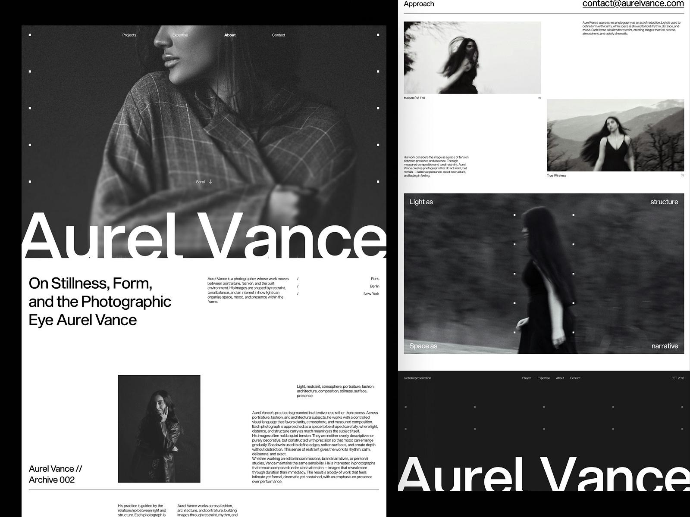
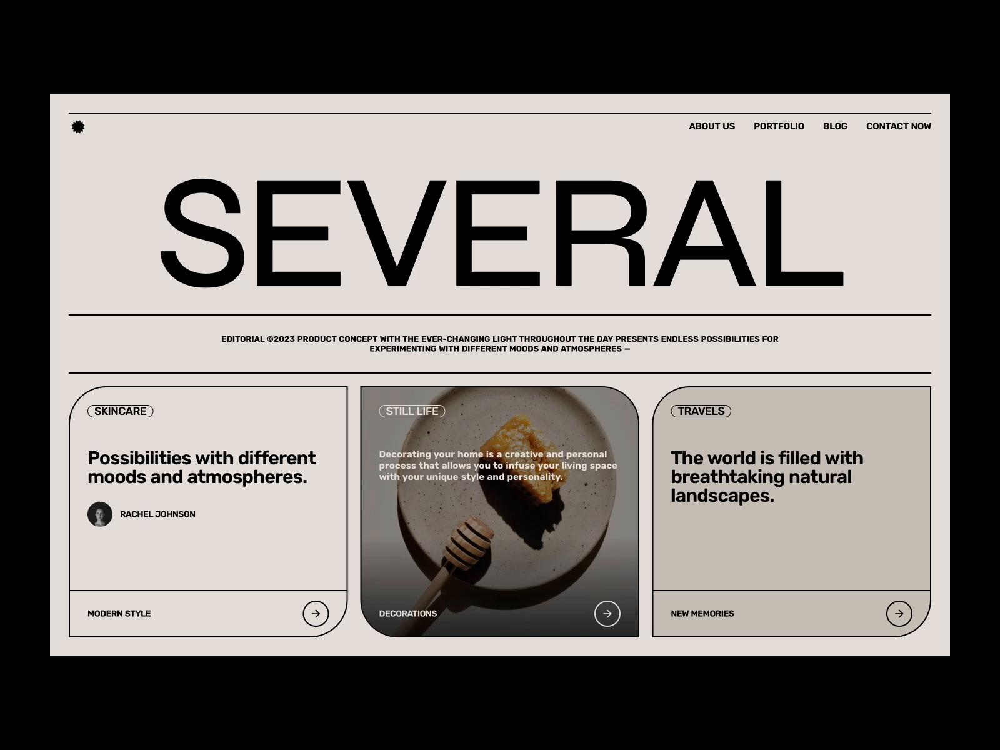

PROYECTO 01
Diseño y desarrollo web
Una selección de proyectos personales y conceptuales enfocados en el diseño y desarrollo web.

Diseño y desarrollo web

Proyecto conceptual de interfaz.
HTML · CSS · JAVASCRIPT · DISEÑO UI
Me interesa especialmente el lado visual de la web: cómo se organizan los elementos, cómo interactúan los colores y las tipografías, y cómo los pequeños detalles pueden transformar por completo una página.
Disfruto experimentar con distintas composiciones, buscar referencias y descubrir nuevas formas de llevar una idea a la pantalla. Me atraen los diseños con personalidad, aquellos que se alejan de lo convencional sin perder funcionalidad.
Actualmente estoy explorando el desarrollo front-end y descubriendo mi propio estilo. Este espacio es parte de ese proceso: un lugar donde puedo poner en práctica lo que aprendo, experimentar con nuevas ideas y seguir evolucionando entre el diseño y el código.
Próximamente agregaré mis medios de contacto.